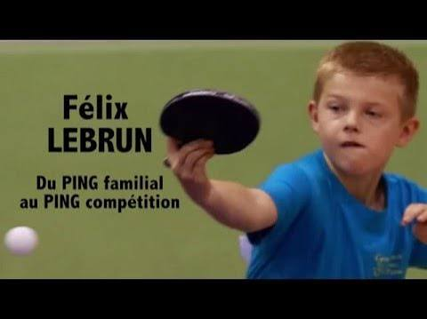
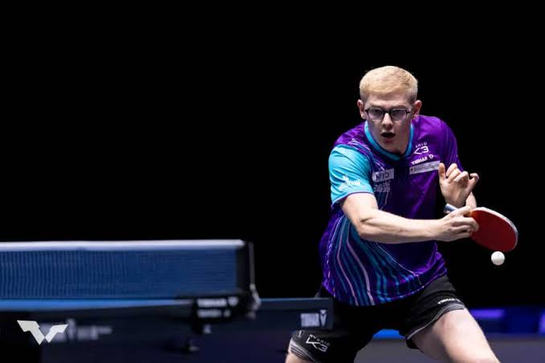
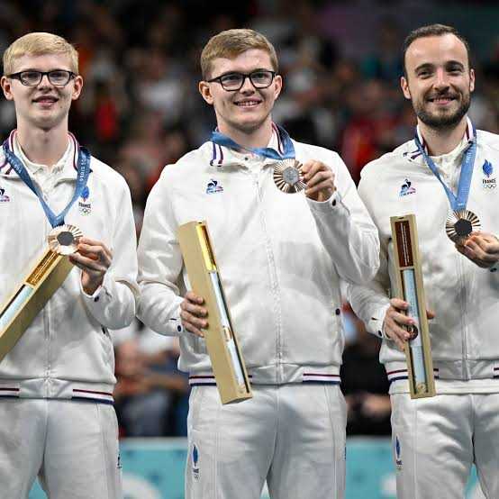
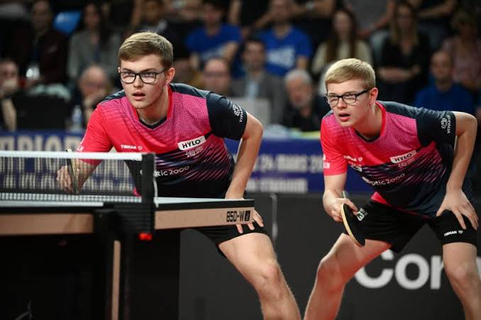

L'ADN du ping dès le berceau (2006-2021)
Né le 12 Septembre 2006 à Montpellier, Félix Lebrun grandit avec une raquette à la main. Dès 3 ans, il fait ces débuts dans une famille de champions: son père Stéphane a été N°7 français et son oncle Christoph Legoût a disputé trois Jeux Olympiques.
Fasciné très jeune par le jeune champion chinois Xu Xin, il adopte la prise porte-plume, un pari audacieux en Europe.
Entraîné aux côtés de son frère aîné Alexis, il rafle rapidement tous les titres nationaux chez les jeunes.

Une ascension express vers l'élite (2022-2023)
A l'adolescence, le prodige Montpelliérain brûle les étapes. En 2022, à seuleemnt 15ans, il devient champion de France senior en double avec Alexis et intègre l'équipe de France A.
L'année suivante il explose au niveau international: il décroche l'or aux Jeux Européens de Cracovie et remporte son premier tournoi WTT à Antalya. Grâce à son jeu ultra-rapide près de la table, il entre dans le top 10 mondial en octobre 2023, à tout juste 17ans.

">
L'été magique des JO de Paris 2024
Lors des Jeux Olympiques de Paris 2024, Félix devient l'une des plus grandes figures du sport français. Porté par le public de l'Arena Paris Sud, il s'offre la médaille de bronze en simple face au Brésilien Hugo Calderano, devenant à 17ans le plus jeune médaillé olympique masculin de l'histoire du tennis de table.
Quelques jours plus tard, il décroche une deuxième médaille de bronze par équipe avec Alexis et Simon Gauzy>

La confirmation au sommet et le duo Alexis (2025-2026)
Loin de s'arrêter là, Félix enchaîne les exploits. Sacré Champion de Franceen simple en 2025(au terme d'une finale mémoranle face à Alexis), puis en 2026 il entre dans l'histoire en août 2026 en devenant le premier Français à remporter un tournoi Grand Smash lors de l'Europe Smash de Malmö, ce qui le propulse N°2 mondial.
En octobre 2026, il réalise un doublé historique aux Championnats d'Europe (or en simple et en double avec son frère).
En octobre 2026, il réalise un doublé historique aux Championnats d'Europe (or en simple et en double avec son frère).
